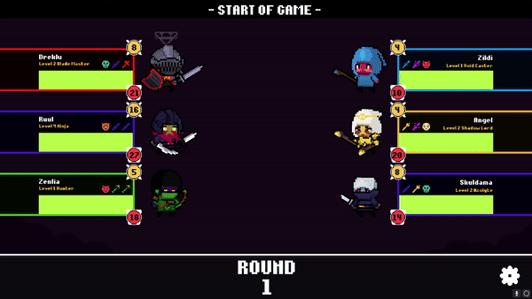
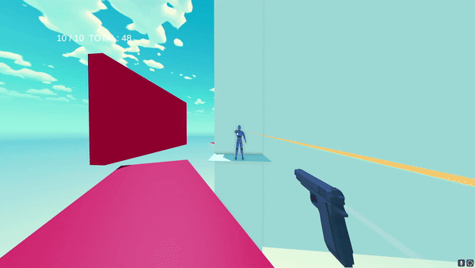
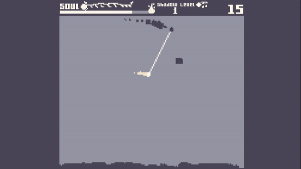
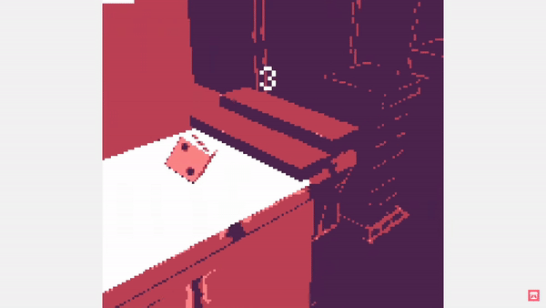

Hello!
My name is Ted Langlie! Recent graduate excited about starting a career in the gaming industry. I went to Lake Washington Institute of Technology for a degree in Computer Software Development. Needless to say, coding and programming is something I've always enjoyed, but I truly fell in love when combining it with my passion for videogames! Check out some of my projects.
Autoguild

Link to project here:
Most current project. Began developing it in November 2022, this is the most long term project I have had, about 4-5 months of development. It was a combination of my love of Hearthstone Battleground and of RPGs like world of warcraft. I combined it to be an AutoBattler RPG, where you progress a guild of characters and strategize fights that are fought automatically. This was the largest programming endeavor by far!
Blurry

Link to project here:
Jumping off of the character controller I made from my last project, I built a full FPS demo project which shows the movement and weapon system at work.
DONT THINK ABOUT IT

Link to project here:
I used this project to learn the unity terrain system as well as structuring a first person character controller.
Shadow

Link to project here:
This was my first time working in 2D. My introduction to using courutines, and more complicated AI programming. Originally I was trying to make it in 3D from a top down view but decided that it didn't serve much purpose to be 3D.
High Roller

Link to project here:
First game I released. It was for the GMTK game jam. I used principles and strategies from a game design class I took and school and put this together within 48 hours. There wasn't many scripts or code to write, but I had completed a game and it scored decently in the jam.
It was even featured on the official Itch.io youtube channel!
Resume
Google Drive Link
Contact
Email: theodorelanglie@gmail.com
Phone: 206-491-8537
Code Sample
I work in Unity using C# but I am always open to trying new languages and systems. Coding in software development gave me a great understanding of C# and object oriented programming.
You can see the code to my most recent project here!
Formatting
//For private variables
private float _exampleFloat;
//For public variables
public float ExampleFloat;
//For serialized variables (unity specific)
[SerializedField] private float _ExampleFloat;
//For variables in interfaces, and scriptable objects
public float example;
Keeping clean and reusable code is something I actively commit to. Good code edicate has always helped me be more efficient in creating games.